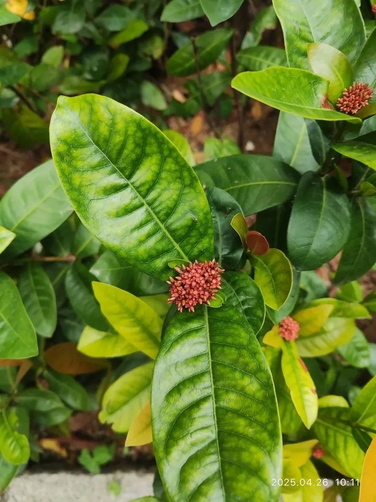

灌木与花木 · 植物界
龙船花 Ixora chinensis

中国南方常见的常绿灌木，夏季开橙红色小花、聚成绣球状花团，花期长，是庭院与绿篱的常见花木。
- 分类
- 门被子植物门纲木兰纲目龙胆目科茜草科属龙船花属
- 栖息环境
- 海拔 800 米以下的热带亚热带地区，喜高温多湿、光照充足
- 地理分布
- 中国广东、广西、福建、台湾、海南等地，东南亚也有分布
- 保护级别
- 暂无评估；中国未列入国家重点保护野生植物名录
物种志
龙船花为常绿灌木，高可达 2 m，小枝有棱；叶片对生，椭圆形至长圆状披针形，革质，全缘。花期 5–10 月，伞房花序顶生，由多数小花聚成半圆球形，花冠高脚碟状、4 裂，橙红色至红色，花径约 1 cm，花团似绣球；核果球形，成熟时紫红色，内含 2 粒种子。
龙船花分布于中国广东、广西、福建、台湾、海南等地及东南亚，喜高温多湿、光照充足，适宜疏松肥沃、排水良好的酸性土壤，不耐寒。因花期长、花团密集、花色鲜艳，常被用于庭院、公园与道路的绿篱、花境与盆栽，华南地区几乎全年可见开花。根、茎与花可入药，有清热凉血之效；龙船花在缅甸被广泛种植，是缅甸的国花之一。
形态与习性
- 株高可达 2 m，小枝有棱
- 花期5–10 月，花橙红色聚成花团
- 果期10–12 月，核果紫红色
- 光照喜光，也耐半阴
- 水分喜湿润，怕积水
- 土壤疏松肥沃的酸性壤土
- 主要用途绿篱与花境、盆栽观赏、根茎花入药
趣味知识
- 龙船花的小花聚成半圆球形的花团，远看像绣球，花期可从 5 月开到 10 月。
- 龙船花花团橙红鲜艳，华南地区几乎全年都能看到它开花。
- 龙船花在缅甸被广泛种植，是缅甸的国花之一。
- 龙船花喜酸性土壤，在北方碱性水土中容易出现叶片黄化。